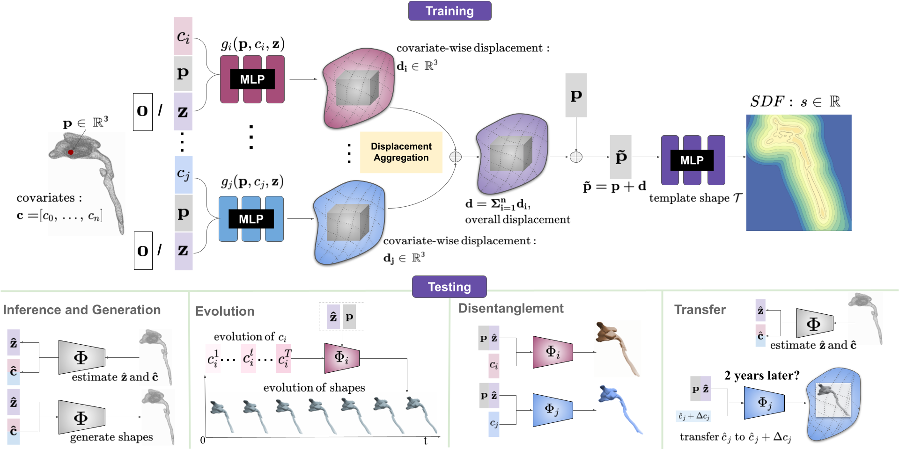
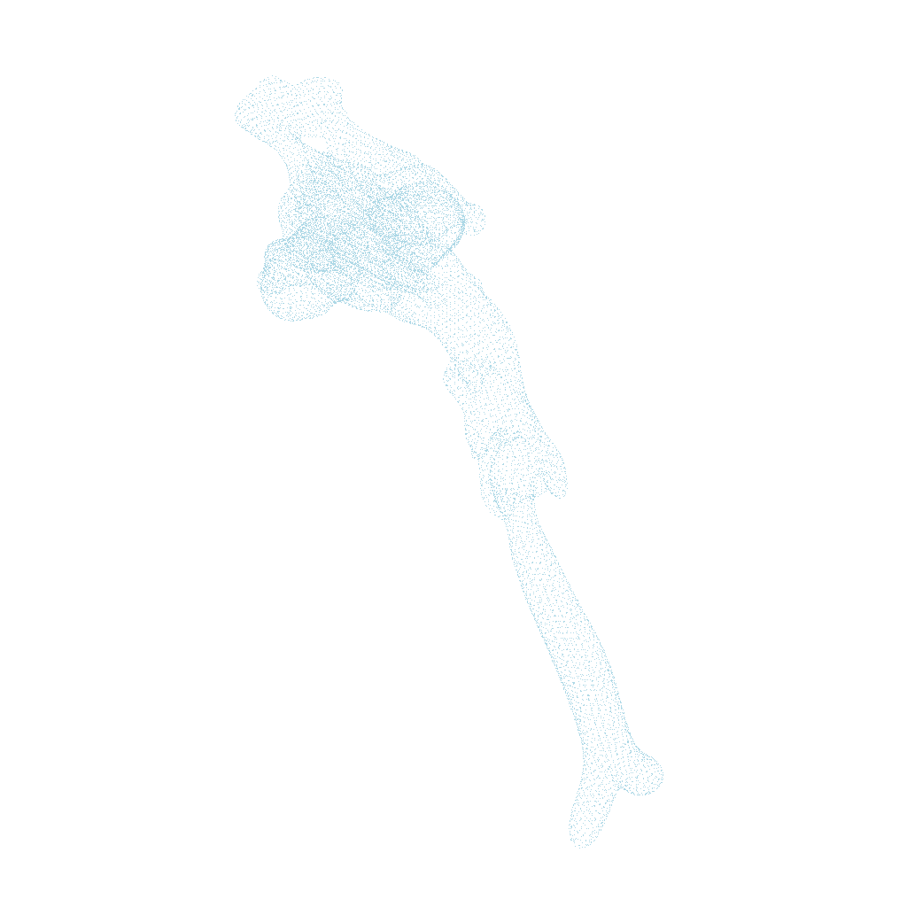
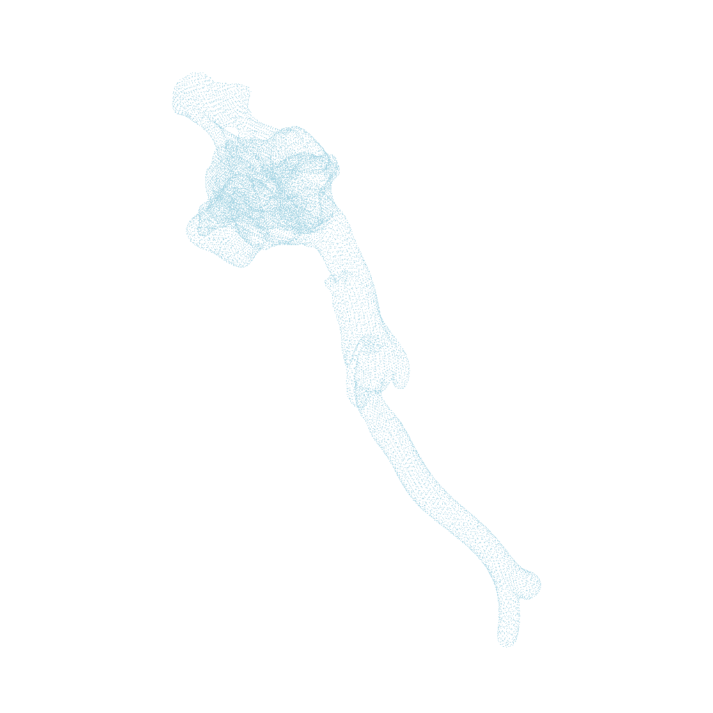
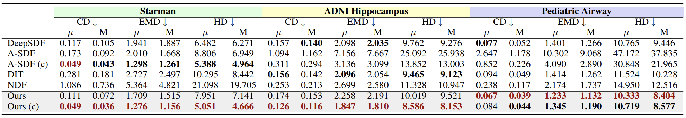
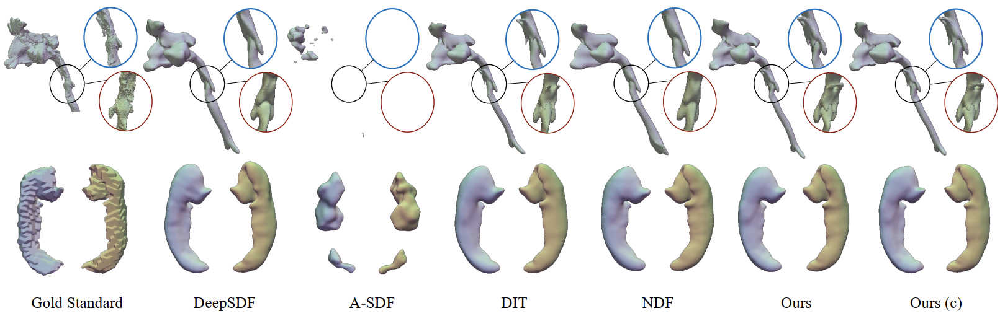
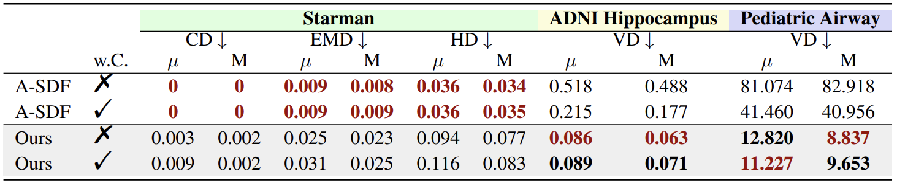
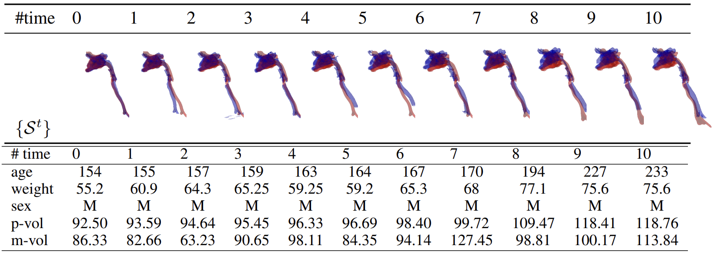

Deep implicit functions (DIFs) have emerged as a powerful paradigm for many computer vision tasks such as 3D shape reconstruction, generation, registration, completion, editing, and understanding. However, given a set of 3D shapes with associated covariates there is at present no shape representation method which allows to precisely represent the shapes while capturing the individual dependencies on each covariate. Such a method would be of high utility to researchers to discover knowledge hidden in a population of shapes. For scientific shape discovery, we propose a 3D Neural Additive Model for Interpretable Shape Representation (\texttt{NAISR}) which describes individual shapes by deforming a shape atlas in accordance to the effect of disentangled covariates. Our approach captures shape population trends and allows for patient-specific predictions through shape transfer. \texttt{NAISR} is the first approach to combine the benefits of deep implicit shape representations with an atlas deforming according to specified covariates. We evaluate \texttt{NAISR} with respect to shape reconstruction, shape disentanglement, shape evolution, and shape transfer on three datasets: 1) \textit{Starman}, a simulated 2D shape dataset; 2) the ADNI hippocampus 3D shape dataset; and 3) a pediatric airway 3D shape dataset. Our experiments demonstrate that \texttt{NAISR} achieves excellent shape reconstruction performance while retaining interpretability. \href{https://github.com/uncbiag/NAISR}{Our code} is publicly available.

We can also animate the scene by interpolating the deformation latent codes of two input frames. Use the slider here to linearly interpolate between the left frame and the right frame.

Start Shape

End Shape




@inproceedings{
jiao2024textttnaisr,
title={\${\textbackslash}texttt\{{NAISR}\}\$: A 3D Neural Additive Model for Interpretable Shape Representation},
author={Yining Jiao and Carlton Jude ZDANSKI and Julia S Kimbell and Andrew Prince and Cameron P Worden and Samuel Kirse and Christopher Rutter and Benjamin Shields and William Alexander Dunn and Jisan Mahmud and Marc Niethammer},
booktitle={The Twelfth International Conference on Learning Representations},
year={2024},
url={https://openreview.net/forum?id=wg8NPfeMF9}
}